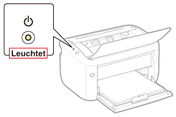

Wenn Sie nicht drucken können und der Drucker über ein USB-Kabel mit dem Computer verbunden ist, überprüfen Sie das Problem mithilfe der folgenden Fragen.
<Frage 1> Ist der Drucker eingeschaltet? (Leuchtet die Anzeige  (Netzanzeige)?)
(Netzanzeige)?)
(Netzanzeige)?)
|
LEUCHTET
|
Fahren Sie mit <Frage 2> fort.
|
|
AUS
|
Schalten Sie den Drucker ein.
|
|
Kann nicht eingeschaltet werden
|
<Frage 2> Blinkt die Anzeige  (Papieranzeige)?
(Papieranzeige)?
(Papieranzeige)?
|
Blinkt
|
Legen Sie das Papier ordnungsgemäß ein, und drücken Sie dann die Taste [
 ] (Papiertaste). ] (Papiertaste). |
|
Blinkt nicht
|
Fahren Sie mit <Frage 3> fort.
|
<Frage 3> Ist das USB-Kabel korrekt angeschlossen?

|
Angeschlossen
|
Versuchen Sie Folgendes.
Wenn Sie einen Hub verwenden, schließen Sie den Drucker direkt an den Computer an.
Wenn Sie ein langes USB-Kabel verwenden, ersetzen Sie es durch ein kurzes.
Wenn Sie ein anderes USB-Kabel zur Verfügung haben, verwenden Sie dieses.
 Wenn der Druckvorgang nicht ausgeführt wird, fahren Sie mit <Frage 4> fort. |
|
Nicht angeschlossen
|
Schließen Sie das Kabel korrekt an.
|
<Frage 4> Können Sie unter Windows eine Testseite drucken?

|
Drucken möglich
|
Es liegt kein Problem mit dem Drucker oder Treiber vor.
Überprüfen Sie die Druckeinstellungen in der Anwendung.
|
|
Drucken nicht möglich
|
Fahren Sie mit <Frage 5> fort.
|
<Frage 5> Wurde der zu verwendende Anschluss korrekt ausgewählt?
|
Ausgewählt
|
Fahren Sie mit <Frage 6> fort.
|
|
Nicht ausgewählt
|
Wählen Sie den korrekten Anschluss aus.
|
|
Der zu verwendende Anschluss kann nicht gefunden werden.
|
Installieren Sie den Druckertreiber erneut.
|
<Frage 6> Ist die bidirektionale Kommunikation aktiviert?
|
Aktiviert
|
Fahren Sie mit <Frage 7> fort.
|
|
Nicht aktiviert
|
Aktivieren Sie die bidirektionale Kommunikation, und starten Sie den Computer und Drucker erneut.
|
<Frage 7> Versuchen Sie Folgendes.
Deaktivieren Sie residente Software, einschließlich der Sicherheitssoftware.
Wenn weitere Geräte über eine USB-Verbindung an Ihren Computer angeschlossen sind, trennen Sie alle nicht benötigten Geräte.
Wenn Treiber oder Software anderer Geräte (USB-Verbindung) auf Ihrem Computer installiert sind, deinstallieren Sie alle nicht benötigten Treiber und nicht benötigte Software.
Schließen Sie das USB-Kabel an einen anderen USB-Anschluss Ihres Computers an.
Schließen Sie den Drucker über ein USB-Kabel an einen anderen Computer an.
Wenn der Druckvorgang nicht ausgeführt wird, fahren Sie mit <Frage 8> fort.
<Frage 8> Installieren Sie den Druckertreiber erneut.
Wenn der Druckvorgang nicht ausgeführt wird, fahren Sie mit <Frage 9> fort.
<Frage 9> Deinstallieren Sie den USB-Klasse-Treiber, und installieren Sie dann den Druckertreiber erneut.
Wenn der Druckvorgang nicht ausgeführt wird, wenden Sie sich an Ihren autorisierten Canon-Händler vor Ort.